ACS Milestone 31
ACS User Guide
What This Application Currently Includes
The current Milestone 31 project gives you three working pieces plus authoring diagnostics, playtest-smoke simulation, classic presentation scaling, release-backed export workflows, packaged handoff previews, triggerable media/sound cue support, and the first AI-provider foundation package for later assisted authoring:
apps/web/index.html: the playable runtimeapps/web/editor.html: the browser-based editorapps/api/dist/index.js: the local API for projects, validation, and published releases
The runtime and editor both use local browser storage:
- game saves are stored in IndexedDB
- local editor drafts are stored in IndexedDB
- the editor also remembers the active backend project id in browser local storage
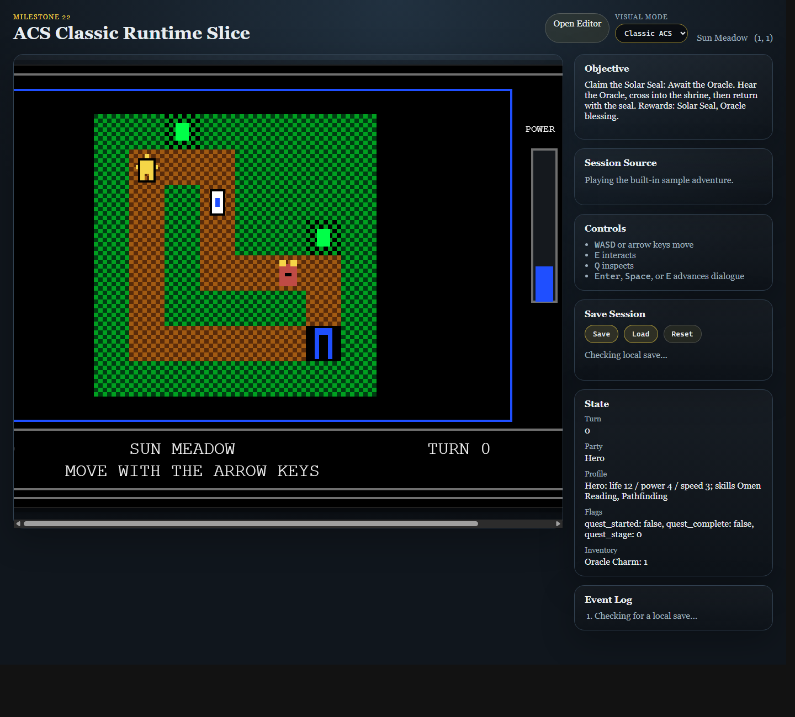
Latest Milestone 31 Foundation Note
Milestone 31 begins with internal AI-provider groundwork rather than visible AI buttons. The new @acs/ai-core package defines shared provider manifests, adventure-generation request envelopes, proposal envelopes, generation plans, proposal review reports, portable session records, proposal change summaries, application plans, portable review packages, export-ready review bundles, archive-ready review handoffs, shared AI handoff integrity reports, AI handoff import plans, AI handoff import reports, portable AI import dossiers, export-ready AI import dossier bundles, archive-ready AI import dossier artifacts, AI import dossier integrity reports, and validation helpers so later AI-assisted creation can plug into one reviewed contract instead of bypassing the editor's structured data model.
Latest Packaging Notes
The current Milestone 31 packaging workflow is centered in Test & Publish. Publish an immutable release first, then use the release-backed preview and export actions for both artifact types.
Preview Release Handoffshows one shared release summary that explains both export modes together.Export Release Handoffdownloads that shared release summary directly as a JSON handoff document with the manifest-backed recommended filename.Preview Artifact IntegrityandExport Integrity Reportadd one last packaging check that compares the forkable package, standalone bundle, and shared release handoff summary before distribution.Preview Review PackageandExport Review Packagebundle that reviewer-facing release context into one ZIP with README files and release notes.- The reviewer ZIP now also includes
review-package-manifest.json, so the review handoff package carries its own typed manifest too. Preview Forkable Artifactnow reads a typed package manifest, so the editor can show the forkable package entry file, file count, and packaged file paths before export.Preview Standalone Packageshows the shipped play bundle, launcher files, release notes, and the packaged distribution metadata.- Both packaged export modes now include
RELEASE-HANDOFF.json, so recipients can see the editable-versus-play-only release story without reopening the editor.
Starting The Application
Build the workspace if needed, then start both local servers from the repo root.
Web Server
node .\apps\web\server.mjsDefault URL:
http://localhost:4173/Common alternate URL in this environment:
http://localhost:4317/API Server
node .\apps\api\dist\index.jsLocal API check:
http://localhost:4318/api/sessionEditor URL
http://localhost:4317/apps/web/editor.htmlPlaying The Game
Milestone 28 defaults to Classic ACS visual mode. This is a presentation mode that draws the same engine state inside a vintage-inspired game panel with a map viewport, right-side status rail, and bottom message band. The classic panel intentionally uses a larger modern play window rather than the original 8-bit pixel dimensions, while preserving crisp retro styling. The classic renderer uses tile definitions and the adventure's classic-acs visual manifest to choose tile and entity sprite styles, so map data remains logical while presentation can evolve. Use the Visual Mode dropdown to switch between Classic ACS and Debug Grid at any time, and use Classic Size to choose Compact, Large, or Extra Large without changing the adventure data.
The runtime can load one of three sources:
- the built-in sample adventure
- a local draft playtest
- a published release loaded with
?release=<id>
The current sample adventure goal is:
- Speak to the Oracle.
- Enter the shrine.
- Claim the Solar Seal.
- Return to the Oracle.
Runtime Controls
W,A,S,Dor arrow keys: moveE: interact with an adjacent entityQ: inspect the current tile or an adjacent entity- Enter, Space, or E: advance dialogue
- Arrow keys: scroll longer dialogue while Classic ACS dialogue is active
Save: store the current session locallyVisual Mode: switch between the classic ACS-inspired presentation and the debug grid rendererClassic Size: resize the classic gameplay panel for readability while keeping the same engine stateLoad: restore the most recent local save for the current sourceReset: restart the current session from its start state
Turn-Based Enemy Timing
The runtime now preserves the classic turn-based feel more deliberately. Successful player actions advance the turn count, but blocked movement does not give enemies a free action. Enemy behavior can define a turnInterval; the sample Shrine Wolf acts every third successful player turn, which gives you room to maneuver instead of having the wolf stick to every step.
Runtime Panels
The play page shows:
- the map canvas
- the current map name
- the player position
- the session source panel
- the objective panel
- save/load/reset controls
- state details such as turn count, flags, and inventory
- the event log
- the Classic ACS bottom message band, or the Debug Grid dialogue panel, when a conversation is active
Milestone 28: Media And Sound Cues
Milestone 28 adds first-class Media Cue and Sound Cue objects. They are not hardcoded browser effects. They are named data objects in the adventure package that point at assets, and trigger actions can reference them by id.
- a splash-card flash when a station AI wakes up
- a region-transition card when the player crosses a portal or airlock
- a confirmation chime when a relic, data core, or terminal activates
- a looping ambient cue for a charged room or dangerous zone
In the current runtime, cues appear as named mediaCuePlayed and soundCuePlayed events in the event log. Later phases can attach real audio/video playback or richer scene presentation without changing trigger rules.
Saving And Loading Progress
The runtime uses separate local save slots for the sample adventure, draft playtests, and published releases.
Examples:
- built-in sample:
adv_milestone3:latest - local draft playtest:
<adventure id>:draft-playtest - published release:
<adventure id>:release:<release id>
Save
Save stores the current RuntimeSnapshot in browser IndexedDB.
Load
Load restores the most recent saved snapshot for the current source. The runtime starts fresh from the adventure start state; it does not automatically restore a save on page load.
Reset
Reset restarts the live session only.
Important:
Resetdoes not erase the saved snapshotLoadcan still bring that snapshot back afterward
Using The Editor
Open the editor at:
http://localhost:4317/apps/web/editor.html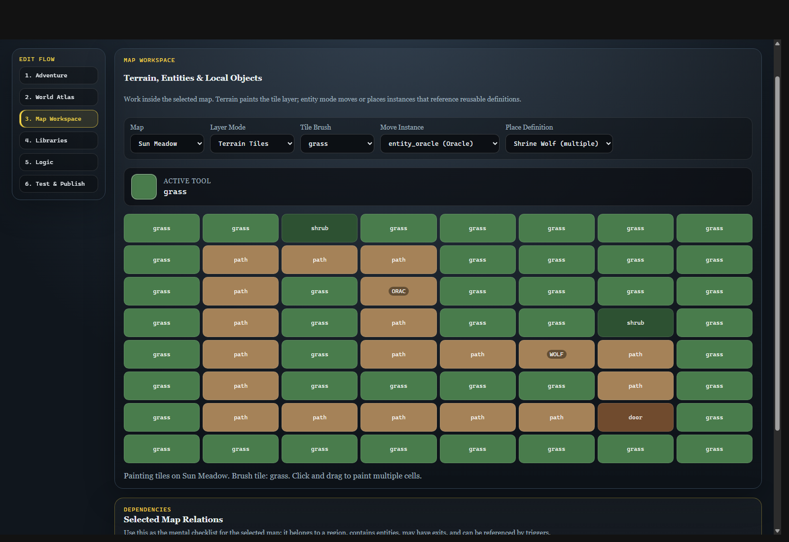
The current editor supports:
- editing the adventure title and description
- switching between maps in the draft
- painting tiles on the current map with a persistent brush
- moving existing entity instances on the current map
- adding new entity instances from reusable entity definitions
- giving placed entity instances their own friendly names and optional behavior overrides
- respecting singleton-vs-multiple placement rules for creatures and NPCs
- editing existing dialogue text records
- editing existing structured trigger records for conditions and actions
- editing current-map structure metadata and creating new blank maps
- editing reusable tile definitions with passability, interaction hints, tags, and classic sprite mappings
- creating and editing reusable quest definitions with stages, rewards, and source references
- reviewing the shared validation summary for the current draft
- running
Validate Draftagainst the local API - saving a local draft
- creating a backend project from the draft
- saving the draft to the backend project
- publishing a release from the project
- opening the latest published release
- launching a draft playtest in the runtime
Organized Edit Game Screen
The editor is now organized around the way game information relates:
Edit Flownavigation moves through Adventure, World Atlas, Map Workspace, Libraries, Logic, and Test & Publish.Adventure Setupcontains game-wide title and description metadata.World Atlascontains region/map thinking: selected map, map scale, parent region assignment, and blank-map creation.Map Workspacecontains the grid-centered work for terrain tiles and entity instances on the selected map.Dependenciesshows the selected map's relationship checklist: region, terrain, population, logic, and exits.Librariescontains reusable definitions and dialogue records that maps, entities, and triggers can reference.Logic & Questscontains trigger editing, shaped aroundWhen / If / Theneven while conditions/actions are still edited as JSON.Test & Publishcontains validation, project saving, publishing, and release opening.
This organization is meant to keep the hierarchy visible: Adventure -> Regions -> Maps -> Tiles / Entities / Triggers, with reusable libraries and logic references shown beside the map workspace.
World Atlas uses three editor-facing map scales: World for broad overview or travel maps, Region for major areas such as kingdoms, districts, station decks, planet zones, or dungeon-level groupings, and Local Area for playable scene maps such as rooms, streets, shrines, caves, rooftops, offices, clearings, or ship bays. Parent Region is for organization only; it does not limit exits.
Editor Buttons
At the top of the editor page:
Back To Play: opens the standard runtime pageSave Draft: stores the current draft locally in IndexedDBReset Draft: restores the built-in sample adventure and removes the saved local draftPlaytest Draft: saves the current draft locally and opens it in the runtime
Editor Toolbar
In the Map Workspace:
World Atlas: choose which map is being edited because maps belong to the region/adventure hierarchyLayer Mode: chooseTerrain TilesorEntity InstancesTile: active only in tile modeMove Entity: active only in entity mode- Add Definition: active only in entity mode
Instance Name: optional friendly name for the placed copy, such asRed Team Spy HandlerBehavior Override: optional per-instance behavior mode for this one placed copy- Place New: switches entity mode into new-instance placement
- Active Brush: shows the currently loaded tile brush or entity placement target
Tile Editing
To paint tiles:
- Set
Layer ModetoTerrain Tiles. - Pick a tile id from the
Tiledropdown. - Check the
Active Brushpreview to confirm the selected tile. - Click a cell in the grid to paint a single tile, or click and drag to paint across multiple cells.
The selected tile stays loaded like a brush until you choose a different tile.
Tile Definition Editing
Tiles are now library objects, not just visual strings in a map layer. In Libraries, choose Tiles from Library Type to edit reusable terrain definitions.
Tile definitions currently include:
Name: the designer-facing label shown in editor listsPassability:passable,blocked, orconditionalDescription: what the terrain representsInteraction Hint: short text that can guide inspection or future interaction UITags: classification labels such asterrain,barrier,relic,water, orsci-fiClassic Sprite: the renderer-neutral classic sprite id used by the Classic ACS visual mode
Why this matters:
- A map can paint
water,shrub,stone,altar, or a newforce_fieldtile by id. - Runtime-core can now consult the tile definition to decide whether terrain blocks movement.
- Runtime-2d can use the tile definition's classic sprite id without hardcoding that every visual style must draw the tile the same way.
- Future visual styles such as high-resolution 2D or 3D can map the same tile definition to different art.
Pixel Art Editing
In Libraries, choose Assets from Library Type to edit presentation assets and classic pixel sprites. The Paint Color control shows a visible swatch beside the dropdown before you paint, and the pixel editor has three live previews: In-Game Preview, Magnified Preview, and Grouping Preview.
The grouping preview repeats the selected sprite in a 4-by-4 block. This is especially useful for terrain and repeated wall/floor patterns because a tile can look fine by itself but create an ugly seam or accidental stripe when it repeats across a room.
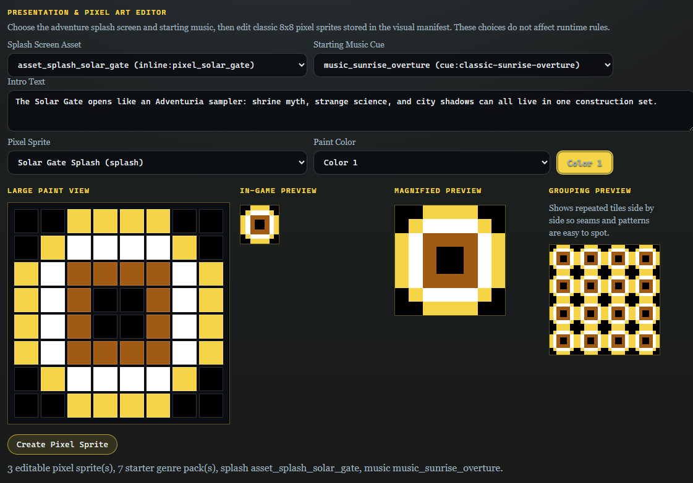
Quest Definition Editing
Milestone 23 makes quests first-class library objects instead of hardcoded objective text. In Libraries, choose Quests from Library Type to edit objective chains.
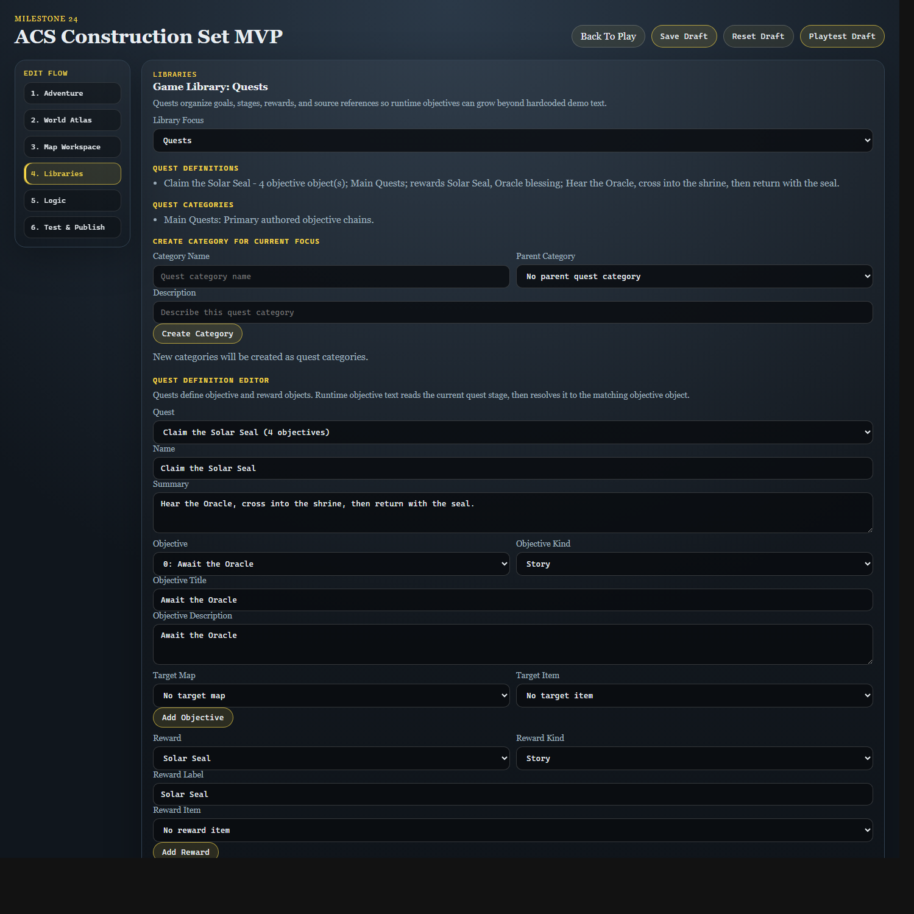
Quest definitions currently include:
Name: the player/designer-facing quest titleSummary: the durable premise shown beside the current objectiveObjective: a selectable objective object with its own stable id, title, kind, description, and optional target map or target itemObjective Kind: a focused classification such asstory,travel,collect,return,survive, orcustomReward: a selectable reward object with its own stable id, kind, label, and optional item referenceReward Kind: a focused classification such asstory,item,flag, orcustomSource References: notes about inspiration, myth, genre pack, or design source materialCategory: reusable organization through the same library category system used by other game objects
Why this matters:
- The Objective panel now reads quest data and runtime quest state instead of hardcoded page copy.
- Trigger actions can advance a quest by using
Set Quest Stage. - Quest conditions can gate later triggers with
Quest Stage At Least. - Future AI-assisted adventure completion can reason over quest definitions, stages, rewards, and references as structured data.
Entity Editing
Entity mode now supports both moving existing instances and placing new instances from definitions.
To reposition an entity:
- Set
Layer ModetoEntity Instances. - Pick an existing entity from
Move Entity. - Click the destination cell.
To add a new entity:
- Set
Layer ModetoEntity Instances. - Pick a reusable definition from
Add Definition. - Optionally type an
Instance Name, such asRed Team Spy Handler,Green Team Spy Handler,Lobby Police Officer, orRooftop Police Officer. - Optionally choose a
Behavior Overrideif this specific copy should act differently from the reusable definition. - Click
Place Newif the editor is currently set to move an existing entity. - Click the destination cell.
Entity definitions and entity instances serve different purposes:
- The definition is the reusable template, such as
Spy HandlerorPolice Officer. - The instance is the copy placed on a map. It can now have its own friendly name and behavior override.
- If no friendly name is set, the editor falls back to the definition name and generated instance id.
Placement rules:
singletondefinitions can only appear once in the adventure. The Oracle is singleton.multipledefinitions can be placed repeatedly. The Shrine Wolf is multiple.- validation reports a blocking error if a singleton definition somehow has more than one placed instance.
multipledefinitions should usually use friendly instance names when the copies have different story roles, factions, patrol jobs, or trigger/dialogue meanings.
Current limitation:
- the editor can add and move entity instances
- it can name placed instances and set a simple behavior override
- it does not yet delete entity instances or create new entity definitions
Validation
The validation panel now runs the shared validation package and shows an error-and-warning summary plus a detailed issue list for the current draft.
Use Validate Draft in the Project & Release panel when you want the local API to run the same validation report that the publish flow uses.
If the draft has blocking errors, project save and publish controls stay disabled until those are fixed.
Tutorial: Build Relay Station Alecto From The Editor
This tutorial assumes you have never used the application before. It walks through the editor exactly the way a new designer should experience it: choose one editor area, make one concrete change, confirm the screen, then move to the next area.
The mission you will build is a science-fiction mini-adventure called Relay Station Alecto. The player reaches a derelict relay station, speaks with a failing station AI, restores power, activates a transit pad, reaches a data core chamber, and returns with recovered star-map data.
What You Are Building
Relay Station Alecto uses three maps: Access Ring, Data Core Chamber, and Airlock Annex. The quest flow is contact, power restoration, transit, data recovery, and final report.
Step 1: Open The Editor
From the repo root, start the web app:
npm run serve:webOpen the editor:
http://localhost:4317/apps/web/editor.htmlYou should see the left-side Edit Flow navigation and the first editor panel.
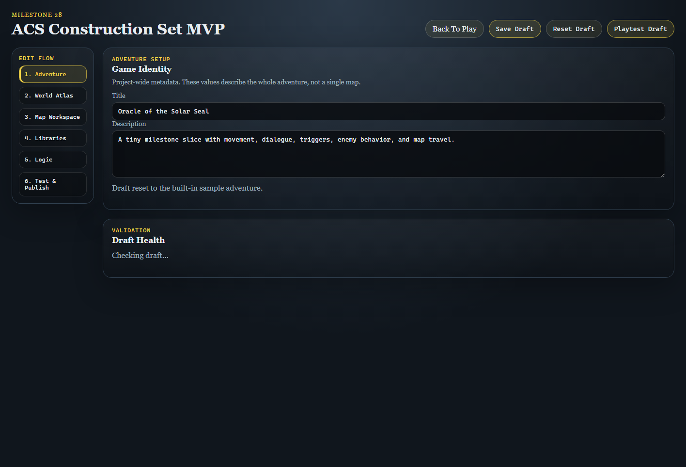
Step 2: Name The Adventure
Select 1. Adventure in the left Edit Flow. Set the title to Relay Station Alecto and the description to A derelict orbital relay must be reawakened before its failing AI loses the final star map.
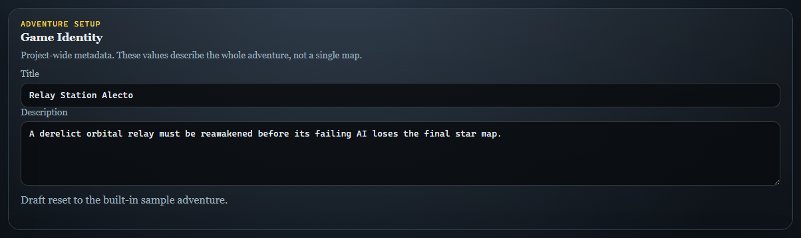
Step 3: Open World Atlas
Select 2. World Atlas. World Atlas is the table of contents for your game world. Regions contain maps. Maps contain tiles, entities, exits, and triggers.
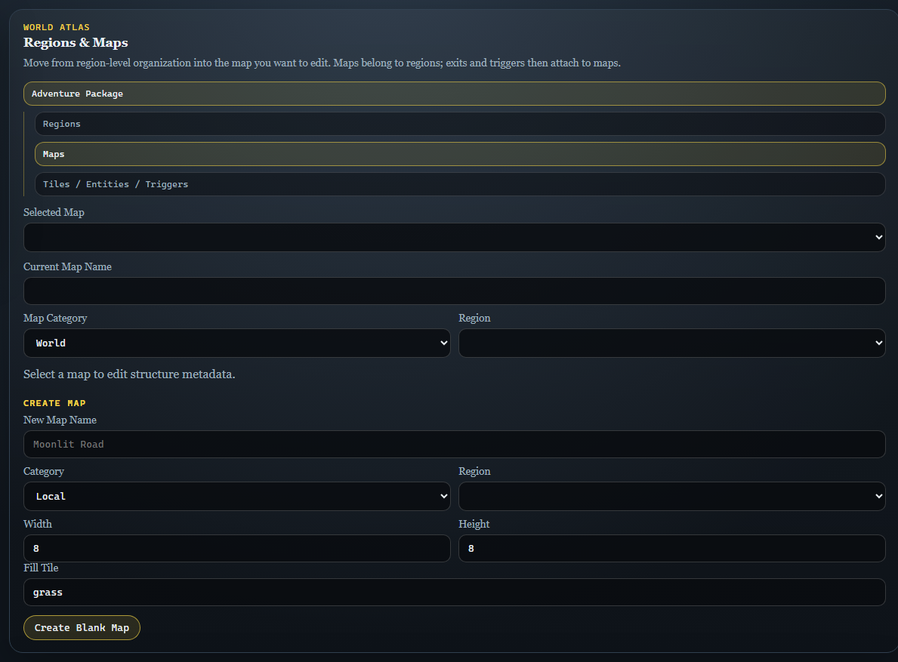
Step 4: Create The Access Ring Map
Create the first map with Access Ring as the map name, a relay or station region, local as the kind, and steel_deck as the fill tile.
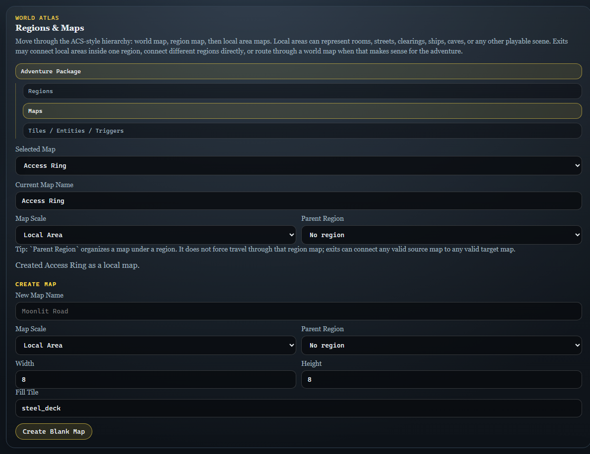
Step 5: Create The Data Core Chamber Map
Create a second map named Data Core Chamber. Use an interior or station region, interior as the kind, and steel_deck as the fill tile.
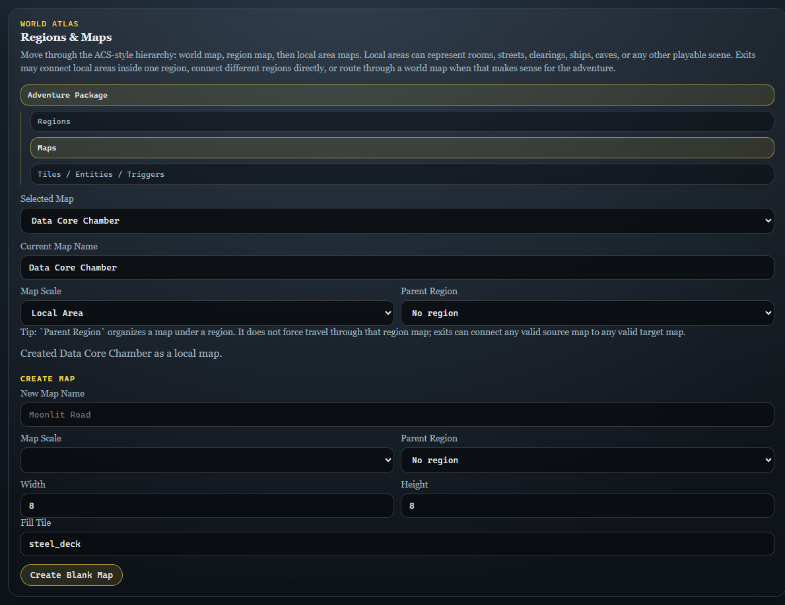
Step 6: Create The Airlock Annex Map
Create a third map named Airlock Annex. This optional map lets you practice normal exits before building dramatic trigger-driven travel.
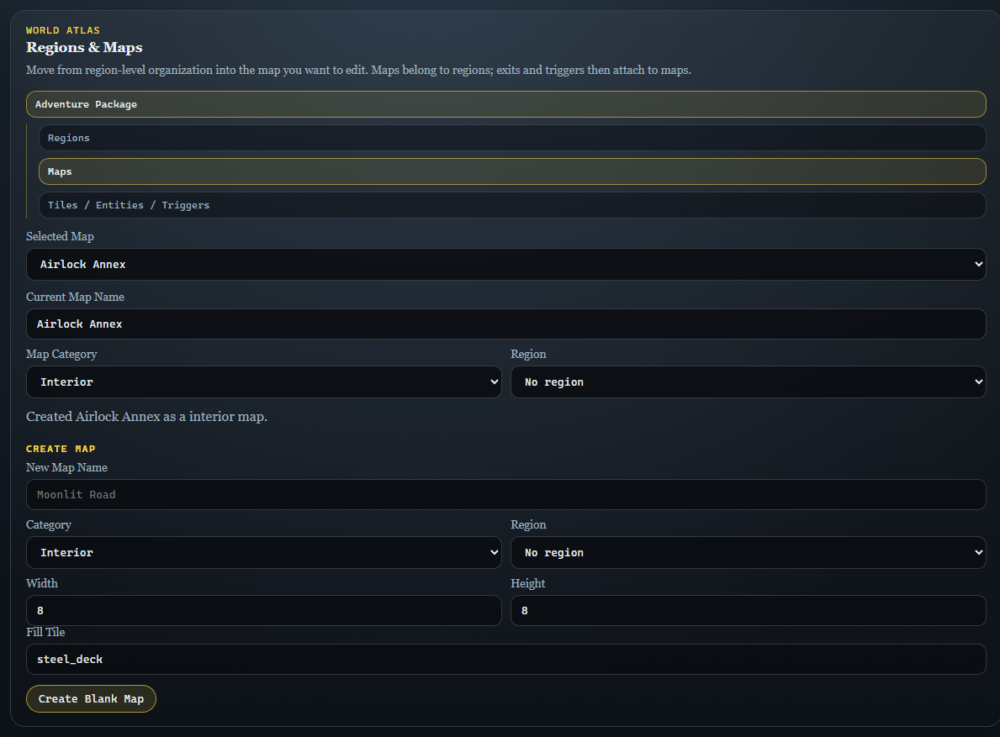
Step 7: Paint The Access Ring
Select 3. Map Workspace, choose Access Ring, set Layer Mode to Terrain Tiles, and paint the station walkway with steel_deck. Add data_terminal, teleport_pad, and force_field tiles to create the basic mission layout.
Because you are painting terrain, the editor should show tile controls and hide controls for entity placement or exit targeting.
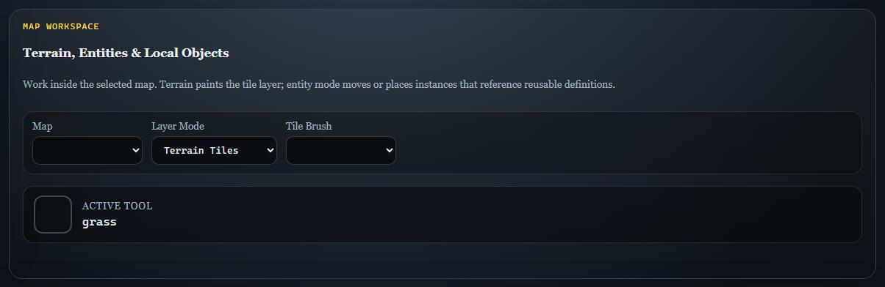
Step 8: Paint The Data Core Chamber
Set the map selector to Data Core Chamber. Keep Layer Mode set to Terrain Tiles, paint a compact room, add a terminal-like core plinth, and place a door tile for the later exit.
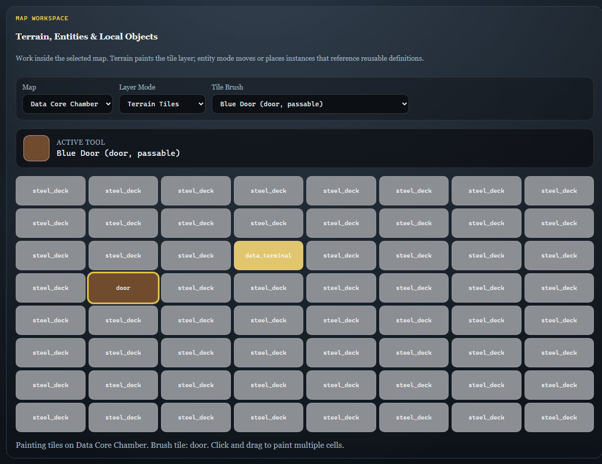
Step 9: Paint The Airlock Annex
Set the map selector to Airlock Annex, paint a small room, and add a signpost or clue-like tile.
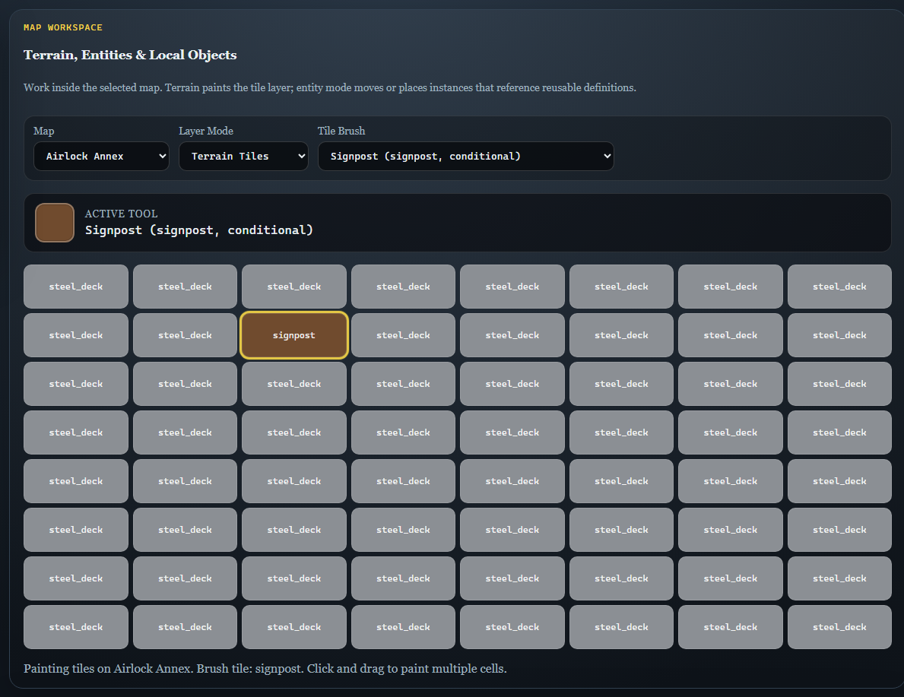
Step 10: Place Station AI Alecto
Switch Layer Mode to Entity Instances. Choose a guide, oracle, or station-AI-like definition. Enter Station AI Alecto in Instance Name, leave behavior inherited or idle, then click the map cell where Alecto should appear.
The definition is the reusable template. The instance is this placed copy on this map. Friendly instance names let one definition support many story-specific copies.
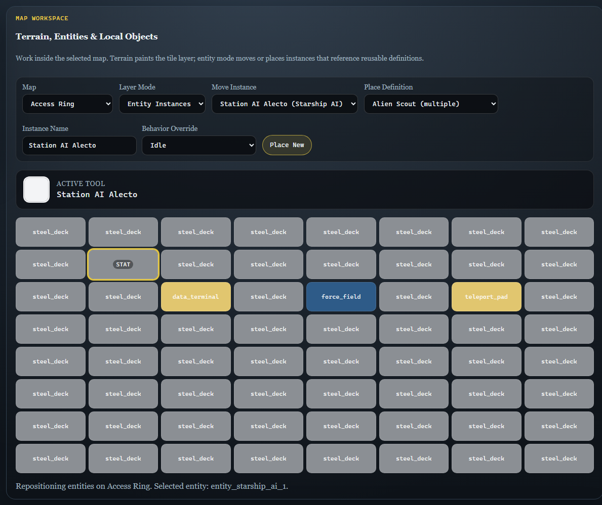
Step 11: Place The Pad Sentry Drone
Keep Layer Mode set to Entity Instances. Choose a drone, guard, or enemy-like definition. Enter Pad Sentry Drone in Instance Name, choose a guard or pursue behavior override, then click near the transit pad.
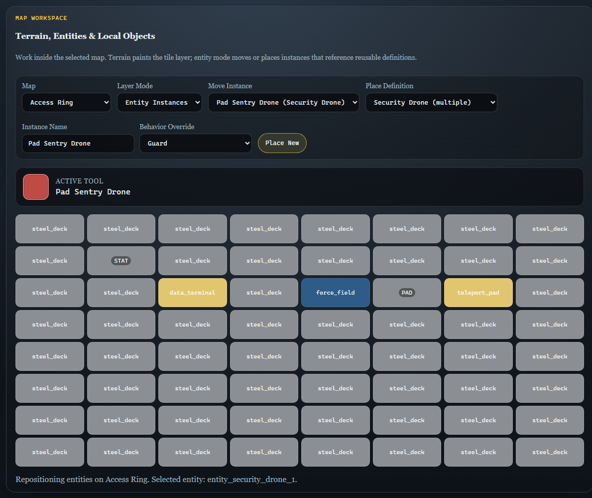
Step 12: Build The Quest Objective Sequence
Select 4. Libraries, then choose the quest-related library focus. Create or update a quest definition named Restore Relay Station Alecto. Set the summary to Contact the station AI, restore auxiliary power, recover the star-map core, and report success before the relay collapses.
Create each objective as a separate object, not as one long text string. Use this sequence:
Establish Contact: kindstory, target the Access Ring, and describe speaking with Station AI Alecto.Restore Auxiliary Power: kindcustomorstory, target the Access Ring, and describe using the terminal after contact.Reach The Core: kindtravel, target the Data Core Chamber.Recover Star Map Data: kindcollect, target the data-core item when the item selector is available.Report Restoration: kindreturn, target the Access Ring.
Create at least one reward object such as Alecto Restored or Recovered Star Map. Objectives and rewards are structured objects with names, kinds, target references, and descriptions so triggers, diagnostics, and future AI tools can reason about them.
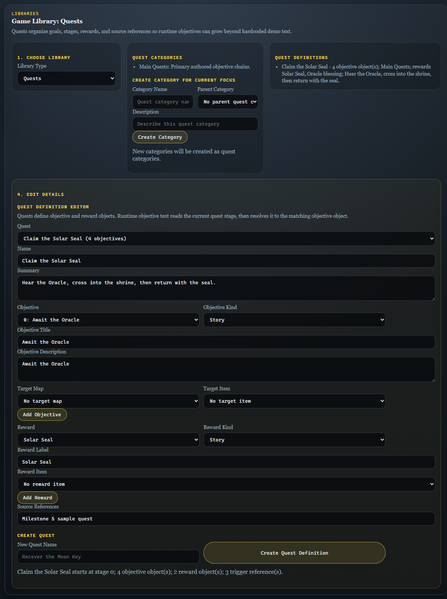
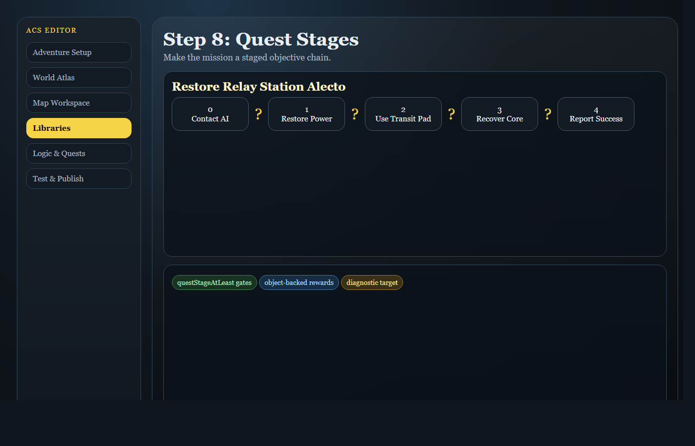
Step 13: Check The Pixel Art Grouping Preview
Stay in 4. Libraries, then switch Library Type to Assets. Pick a Pixel Sprite, pick a Paint Color, confirm the visible color swatch, and click cells in Large Paint View. The In-Game Preview, Magnified Preview, and Grouping Preview update together.
For Relay Station Alecto, this is where you would refine repeated station tiles, terminal icons, splash cards, or future object sprites. The grouping preview is the key safety check for terrain seams before you paint an entire map with one sprite.
Step 14: Create The Trigger Chain
Select 5. Logic. A trigger has three parts: When starts the trigger, If checks conditions, and Then runs actions. Relay Station Alecto should use a chain of entity interaction, terminal activation, transit travel, data recovery, and final report triggers.
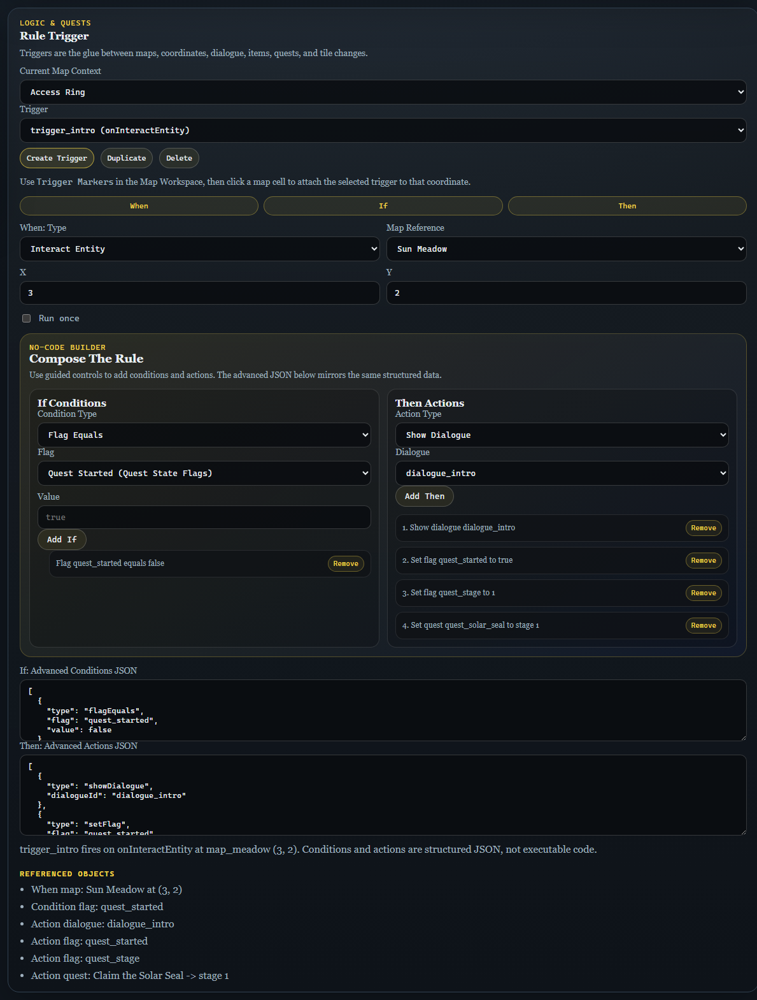
Build AI Contact: use Interact Entity on Station AI Alecto, optionally require ai_contacted = false, then add Play Media Cue, Play Sound Cue, Show Dialogue, Set Flag ai_contacted = true, and Set Quest Stage 1.
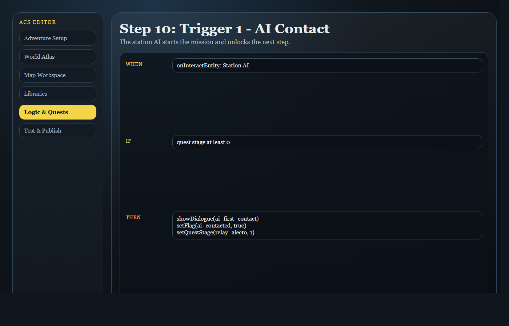
Build Auxiliary Power Terminal: use Enter Tile on the terminal, require ai_contacted = true and quest stage at least 1, then show terminal dialogue, play a sound cue, set auxiliary_power_online = true, give an access item, change the transit-pad tile to active, and set quest stage 2.
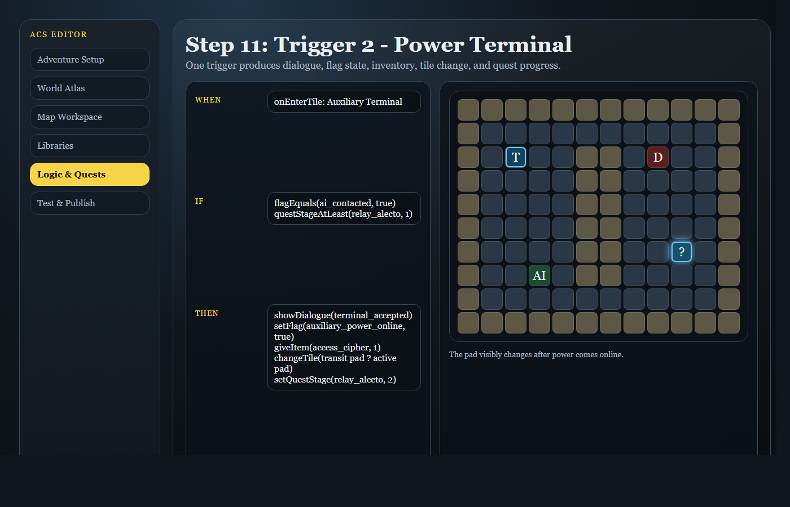
Build Transit Pad Jump: use Enter Tile on the active transit pad, require auxiliary_power_online = true, play a transition media cue, play a jump sound cue, teleport to the Data Core Chamber, and set quest stage 3.
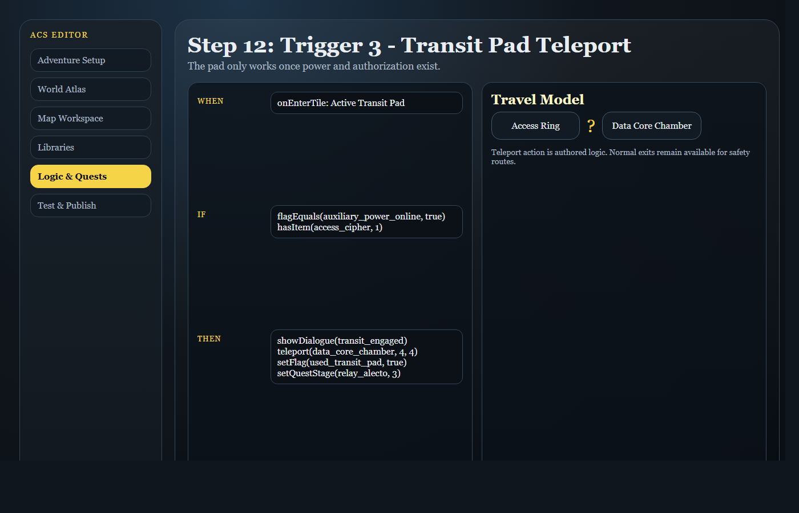
Build Recover Core: use Enter Tile on the data-core tile, require quest stage at least 3, then play a sound cue, show dialogue, give the recovered data item, change the core tile to a spent/empty tile, set a recovered flag, and set quest stage 4.
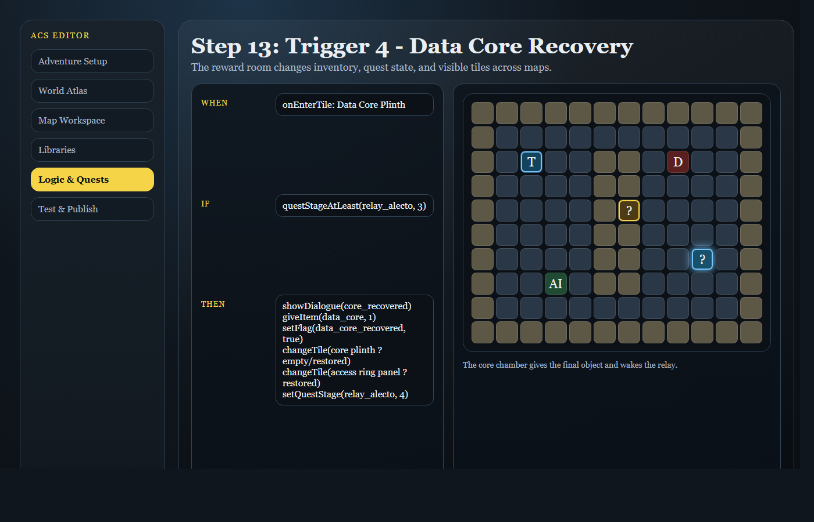
Milestone 28 callout: in Then Actions, choose Play Media Cue to add a splash, image, transition, cutscene, or future video cue. Choose Play Sound Cue to add an authored effect, music, or ambient cue. The current application stores these as cue objects and shows mediaCuePlayed / soundCuePlayed events in the runtime log. Real file upload/playback is intentionally later; the supported data categories are already present as image, splash, video, audio, music, and sound assets so the engine does not need to change when richer playback lands.
Step 15: Create A Normal Exit Between Maps
Return to 3. Map Workspace. Set the map selector to Data Core Chamber, set Layer Mode to Exits & Portals, choose Access Ring as the target map, enter target coordinates, and click the door cell.
An exit is a map-link record. A teleport is a trigger action that can be gated behind conditions. You can use both in one adventure.
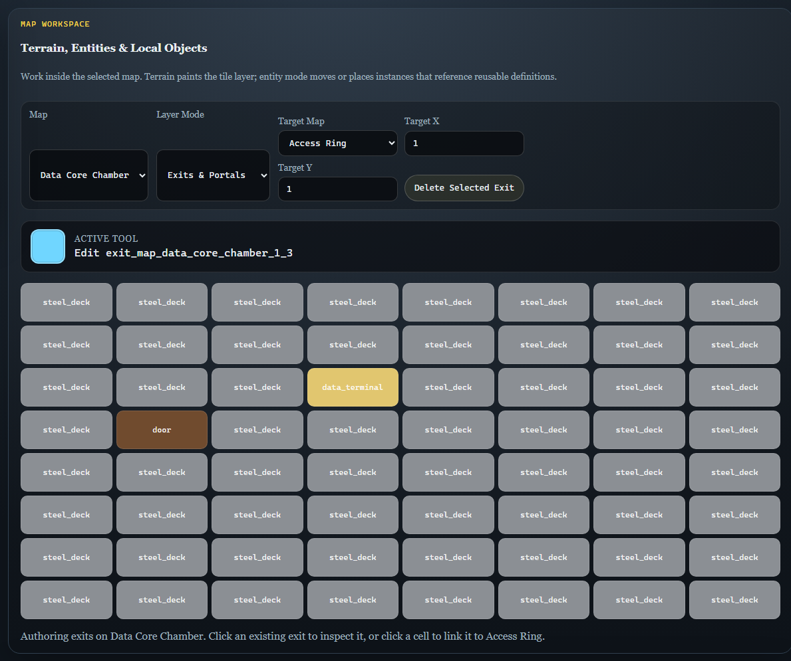
Step 16: Inspect The Selected Cell
Stay in Map Workspace after creating the exit. The right-side Selected Cell Inspector tells you what is on the clicked coordinate: map and cell, tile definition and passability, occupant, exit record, and local triggers. This Milestone 27 feature gives a first-time designer one place to answer, "What is actually on this square?"
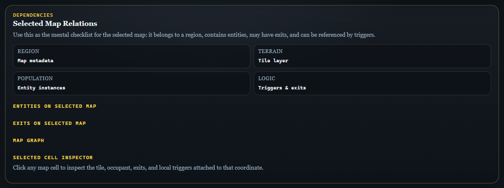
Step 17: Run Diagnostics
Select 6. Test & Publish. Use diagnostics before playtesting to check missing map references, invalid coordinates, broken trigger references, missing dialogue ids, impossible exits, and other authoring issues.
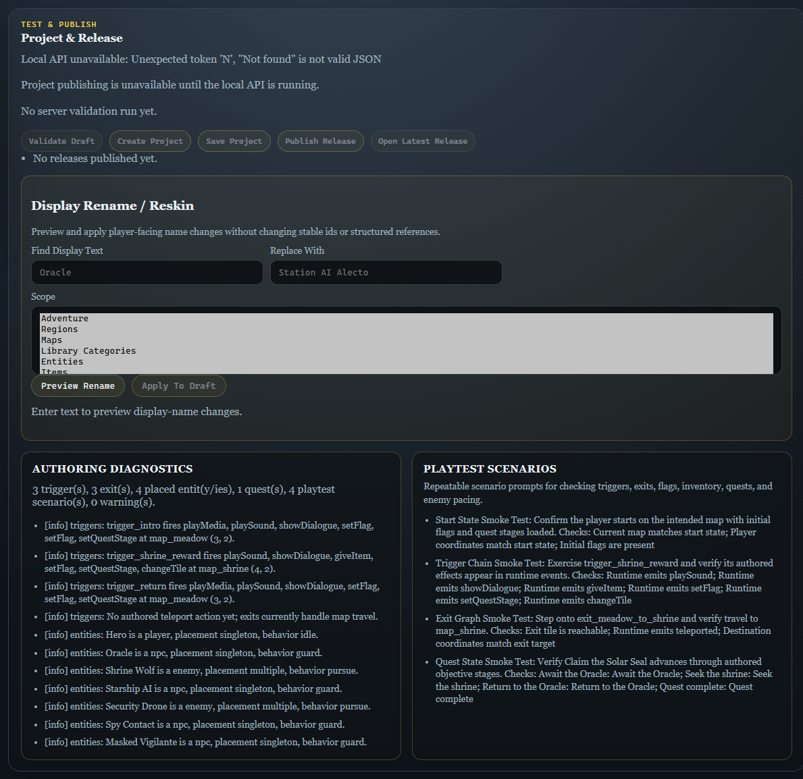
Step 18: Preview A Display Rename / Reskin
Still in 6. Test & Publish, use Display Rename / Reskin. Enter Oracle in Find Display Text, enter Station AI Alecto in Replace With, leave all scopes selected, and click Preview Rename. The preview lists player-facing display fields that would change while stable internal ids and structured references stay unchanged.
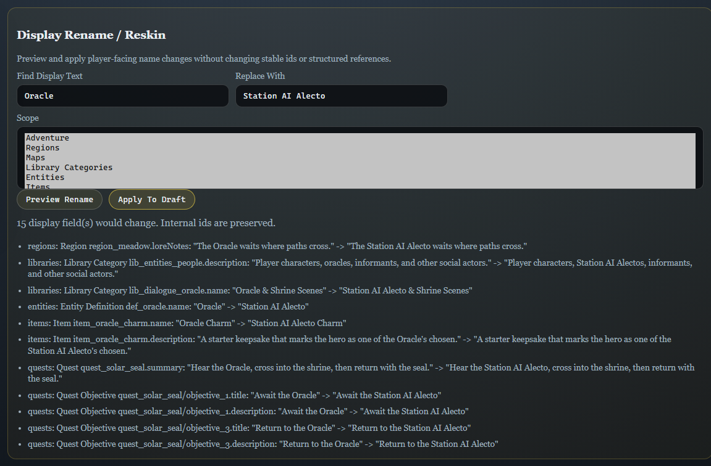
Step 19: Save, Publish, Or Playtest
After diagnostics look clean, save or publish the draft, then open the runtime play view. Test the mission in order: start in the Access Ring, interact with Alecto, restore power, use the transit route, recover the data core, return through the exit, and complete the mission with Alecto.
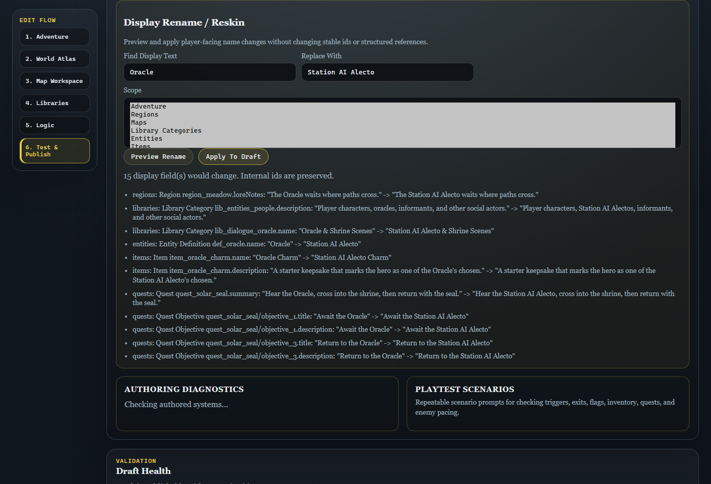
What This Tutorial Demonstrates
Relay Station Alecto demonstrates beginner navigation through the editor flow, map creation, terrain painting, progressive disclosure, selected-cell inspection, reusable entity definitions, uniquely named entity instances, per-instance behavior overrides, quest definition planning, trigger chains, normal exits, UI-based display rename/reskin, diagnostics, and a science-fiction adventure structure inspired by the variety-show spirit of Land of Adventuria.
Future milestones will deepen this pattern with richer item CRUD, custom starter libraries, stacked trigger templates, graphic editing for every visual object, splash screens, music, sound effects, cutscenes, and eventually AI-assisted adventure generation.
Projects And Published Releases
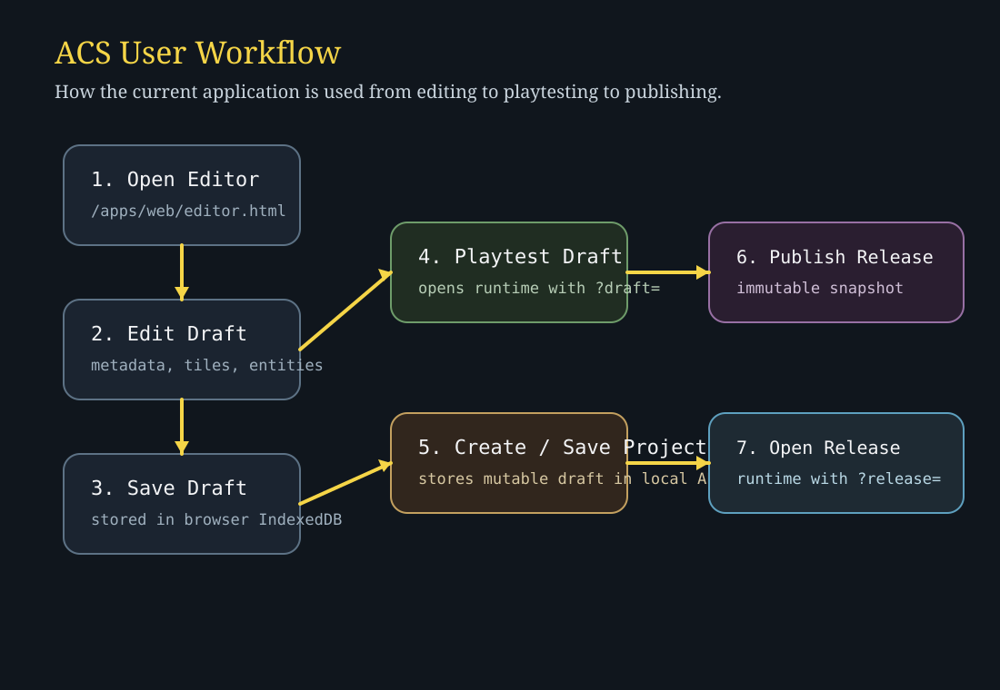
The editor can move a draft through five project stages:
Validate Draft: run the backend validation report without publishingCreate Project: create a mutable backend project from the current draftSave Project: update the mutable backend draftPublish Release: create an immutable release snapshotOpen Latest Release: launch that published release in the runtime
Important Distinction
Save Draftwrites to browser storageSave Projectwrites to the local APIPublish Releasefreezes a release snapshot instead of editing it in place
Future Export Modes
Future publishing work should split finished projects into two shareable forms:
Forkable Project: an editable construction-set package that includes source adventure data, custom libraries, provenance, and remix/license metadata so another designer can continue building from it.Standalone Playable: a runtime-only package that includes the validated release and required assets, but excludes editor panels, draft metadata, authoring diagnostics, and private construction notes.
Both modes should start from an immutable published release. That keeps the draft safe while letting the same adventure become either a remixable design file or a clean playable game.
Where Data Lives
Browser Storage
Used for:
- runtime saves
- local drafts
- remembered active project id
Local API Storage
Used for:
- mutable project drafts
- immutable published releases
- stored locally in
apps/api/data/store.json
Built-In Starter Libraries
Milestone 26 adds the first dedicated boundary for built-in library content: packages/default-content.
The important split is:
packages/domaindefines the shapes, such asStarterLibraryPackDefinition, item definitions, tile definitions, entity definitions, and quest definitions.packages/default-contentdefines built-in starter-library source metadata and helpers for creating starter snapshots and custom library export files.apps/web/src/sampleAdventure.tsstill contains the current sample adventure's actual object data while the starter content is being migrated out over time.
Starter libraries should be treated as application-owned defaults. A designer can start from them, but editing a built-in object should eventually create a project-local copy rather than mutating the built-in library.
Custom Libraries
Custom libraries should be stored separately from the starter libraries. They are designer-owned export files with:
- their own schema version
- a custom source marker
- genre tags
- references to any starter packs they were based on
- exported object collections for categories, tiles, entities, items, skills, traits, spells, flags, quests, dialogue, custom objects, and assets
This gives us three clean layers: shipped starter libraries, adventure-local objects, and reusable custom libraries that can be imported into future projects.
Milestone 25: Authoring Diagnostics And Smoke Testing
Milestone 25 adds a safety dashboard for designers. The editor now has an Authoring Diagnostics card and a Playtest Scenarios card inside Test & Publish. These are not replacements for validation. Validation answers, "is this package legal enough to publish?" Diagnostics answers, "what authored systems should I playtest and what could feel wrong even if the package is valid?"
Use this pass when you finish editing a scene:
- Open
Editorand chooseTest & Publishfrom the leftEdit Flow. - Read
Draft Healthfirst. Fix blocking validation errors before publishing. - Read
Authoring Diagnostics. It summarizes trigger effects, entity behavior, exits, initial flags, item definitions, and quest objects. - Read
Playtest Scenarios. These scenario prompts tell you what to test manually: start state, trigger chain, exit graph, and quest state. - Run the automated smoke test from the repo root when you want a repeatable baseline check:
npm run playtest:smokeThe smoke script builds the project, validates the sample adventure, confirms the start state, interacts with the Oracle, verifies the shrine reward trigger, checks the Solar Seal item grant and altar tile change, and confirms the meadow-to-shrine exit travel.
Milestone 29A: Full Testing Gate
Milestones now require the full available test suite before completion:
npm testThat command currently runs every available layer:
npm run test:unit: package-level unit tests for runtime-core, editor-core, validation, and persistence.npm run test:ui:editor: a headless Chromium editor smoke test that confirms Map Workspace progressive disclosure and pixel editor preview controls.npm run test:ui:runtime: a headless Chromium runtime E2E test that opens the playable browser app and verifies canvas startup, visual preference changes, keyboard movement, Oracle interaction, dialogue, trigger/flag logging, save, reset, and load.npm run test:ui: both browser UI tests.npm run playtest:smoke: the end-to-end runtime smoke test for validation, start state, Oracle interaction, shrine reward effects, inventory, tile change, and exit travel.npm run test:e2e: both browser UI tests plus the runtime smoke playtest.
Use npm run test:coverage for the coverage-capable unit-test path. On this current Node 18 Windows runtime, raw V8 coverage emission is disabled by default because NODE_V8_COVERAGE crashes the process; on a verified runtime, set ACS_ENABLE_V8_COVERAGE=1 first to emit JSON coverage files.
Creative Tutorial Use: Debug The Shrine Reward
Try this as a designer-facing diagnostic exercise after experimenting with triggers:
- In
Logic, select the shrine reward trigger. - Temporarily remove or change the
giveItemaction in the guided action list or advanced JSON. - Go to
Test & Publishand notice that validation may still pass, because a trigger without that reward can be structurally legal. - Use
Authoring DiagnosticsandPlaytest Scenariosto remind yourself that the reward chain should be tested. - Restore the
giveItemaction foritem_solar_seal, then runnpm run test:e2eto verify both the browser UI and the command-level runtime playthrough.
This distinction matters as adventures get richer. A missing reward, one-way portal loop, or quest stage mismatch can be valid data but bad adventure design. Milestone 25 gives us the first reusable place to surface those authoring concerns without cluttering every editor panel.
Skinning Readiness Notes
The project now tracks its live Play Mode and Edit Mode UI surface area in docs/ux-skinning-inventory.md and docs/ux-skinning-inventory.json.
Those files exist so future skins can be applied safely. When the application later gets WorldTree, classic, minimal, or other visual shells, the team will already have a current inventory of panels, buttons, inputs, dropdowns, lists, overlays, workspace grids, dialogue surfaces, runtime HUD elements, and publishing or diagnostics cards.
Milestones that change visible UI are expected to update that inventory as part of closeout.
Current Limitations
This is still an MVP. Important current limitations include:
- no real user accounts yet
- no cloud backend yet
- no asset upload flow yet
- no live AI provider is wired into the application yet, so Milestone 31 AI work is still contract and review infrastructure rather than an end-user generation feature
- no deletion of maps yet
- no deletion of entity instances in the editor yet
- trigger records can now be created, duplicated, deleted, edited, and placed as map markers
- brand-new dialogue and item record creation remains future work; quest definitions can now be created and edited
- the classic visual mode now includes manifest-backed pixel sprite authoring, stocked starter genre packs, splash-screen selection, and starting music selection. The current packs include real reusable item, entity, tile, skill, trait, spell, and asset objects; later milestones will deepen sprite sheets, animation, and higher-resolution asset-pack preparation
- the editor can create and edit tile and quest definitions, but deletion and advanced conditional passability rules remain future work
- the editor can edit existing reusable entity definitions, but brand-new entity/item/dialogue definition creation remains future work
- true map-window scrolling for oversized runtime maps is still future work; the current renderers do not yet provide a full player-follow or camera-based large-map presentation model
- targeted item usage is still future work; the accepted plan is to add designer-authored self/entity/tile item effects, shared actor-action validation, item effect authoring in Libraries, and player-facing targeting UX in later milestones instead of hardcoded one-off combat/heal shortcuts
- variable sprite scale is still future work for higher-resolution modes; the accepted plan is to keep classic 8-bit mode unchanged while later renderer families gain optional visual scaling, render layers, and higher-resolution collision/rendering support
- the editor now includes authoring diagnostics and generated playtest scenario prompts in
Test & Publish; the CLI smoke test can be run withnpm run playtest:smoke
Documentation Generation Instructions
From this point forward, every milestone documentation pass should follow these rules:
- The User Guide must keep a reader-first structure: product overview, current capabilities, quick start, play overview, editor overview, flagship tutorial, publishing/sharing guidance, troubleshooting, current limits, and a short glossary. The working outline is tracked in
docs/user-guide-outline.md. - The User Guide tutorial must exercise every feature currently available in the application, not just the newest feature.
- After the Milestone 24 starter-library foundation, continue expanding the main tutorial into a brand-new adventure creation walkthrough. It should be inspired by Land of Adventuria: fun, multi-genre, screenshot-heavy, and focused on building something from scratch using genre libraries, maps, tiles, entities, items, quests, triggers, exits, splash screen, and starting music.
- The tutorial is a product-selling walkthrough, not just a checklist. It should be the most exciting, creative, and feature-rich adventure the current application can support while still remaining readable to a first-time user.
- When Milestone 27 lands, the tutorial must show UI-based display rename/reskin operations with preview and validation, not scripts or code edits.
- The newest milestone's features must be called out explicitly near the start of the tutorial and in the feature list.
- The User Guide PDF must include current screenshots or screenshot-style graphics for the runtime, editor, and major workflow diagrams.
- Tutorial screenshots must be step-specific. If a step tells the reader to choose a map, paint a tile, select a library focus, inspect a cell, or create an exit, the screenshot should crop to the relevant panel or changed map area rather than repeating a generic full-screen editor image.
- Before regenerating PDFs, make sure HTML source pages use print-safe font and link colors that remain readable against a white page background.
- Every milestone completion must run
npm testand document any unavailable test layer before calling the milestone complete. - When planning or implementation changes are accepted, update
docs/roadmap.htmlplus the related durable docs in the same pass rather than leaving the roadmap, reference, guide, and AI-readable context out of sync. - The System Reference must keep a readable top-down structure: purpose, executive summary, product model, domains, boundaries, architecture, data hierarchy, modes, workflows, publishing, AI integration, runtime, editor, presentation/skinning, storage, validation, limits, roadmap alignment, glossary, technical catalog, diagrams, and maintenance guidance.
- Mermaid diagrams in Markdown should have readable rendered equivalents in the HTML/PDF outputs.
- Diagrams, screenshots, code blocks, and enclosed callout boxes should avoid page splits wherever practical.
- If a screenshot shows UI button text spilling outside a button, regenerate the graphic with smaller text before publishing the PDF.
Troubleshooting
The editor says the API is unavailable
Start the API server:
node .\apps\api\dist\index.jsValidate Draft fails or publish stays disabled
Common causes:
- a trigger references a missing map, item, dialogue, or quest
- an entity or start position is outside the bounds of a map
- a map layer has the wrong tile count for its dimensions
- a map or trigger references a tile id that has no tile definition
- a singleton entity definition has more than one placed instance
A published release will not open
Common causes:
- the API may not be running
- the release id may not exist anymore
- the local API store may have been cleared
My draft changes are gone
Check whether you clicked:
Save Draftfor browser-local storageSave Projectfor backend storage
Playtest Draft opens the sample adventure instead
The runtime falls back to the built-in sample when it cannot find the draft key passed by the editor.
Summary
At this point, the application is best thought of as:
- a playable ACS-style browser runtime
- a browser-based draft editor with tile painting, tile definition editing, entity placement, map creation, definition editing, dialogue editing, and structured trigger editing
- a local save and draft persistence layer
- a local project, validation, and publishing workflow
- a playtest and release loop that uses the same runtime page